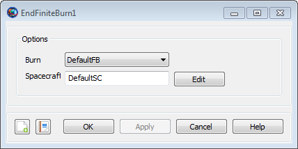

BeginFiniteBurn — Model finite thrust maneuvers
BeginFiniteBurnaFiniteBurn(aSpacecraft)
EndFiniteBurnaFiniteBurn(aSpacecraft)
When you apply a BeginFiniteBurn command, you turn on the thruster configuration given in the specified FiniteBurn model. Similarly, when you apply an EndFiniteBurn command, you turn off the thruster configuration in the specified FiniteBurn model. After GMAT executes a BeginFiniteBurn command, all propagation for the spacecraft affected by the FiniteBurn object will include the configured finite thrust in the dynamics until an EndFiniteBurn line is executed for that configuration. In order to apply a non-zero finite burn , there must be a Propagate command between the BeginFiniteBurn and EndFiniteBurn commands.
To apply the BeginFiniteBurn and EndFiniteBurn commands, a FiniteBurn object must be configured. This object requires the configuration of ChemicalTank and ChemicalThruster models. See the Remarks section and the examples below for a more detailed explanation.
See Also: Spacecraft, ChemicalThruster, ChemicalTank, FiniteBurn
| Option | Description | ||||||||||
|---|---|---|---|---|---|---|---|---|---|---|---|
| BeginFiniteBurn - Burn | Specifies the FiniteBurn object activated by the BeginFiniteBurn command.
| ||||||||||
| BeginFiniteBurn - SpacecraftList | Specifies the Spacecraft (currently only a single Spacecraft can be in this list) acted upon by the BeginFiniteBurn command. The Spacecraft listed in SpacecraftList will have thrusters activated according to the configuration of the FiniteBurn object defined by the Burn field.
| ||||||||||
| EndFiniteBurn - Burn | Specifies the FiniteBurn object de-activated by the EndFiniteBurn command.
| ||||||||||
| EndFiniteBurn - SpacecraftList | Specifies the Spacecraft (currently only a single Spacecraft can be in this list) acted upon by the EndFiniteBurn command. Spacecraft listed in SpacecraftList will have thrusters de-activated according to the configuration of the FiniteBurn object defined by the Burn field.
|
The BeginFiniteBurn and EndFiniteBurn command dialog boxes allow you to implement a finite burn by specifying which finite burn model should be used and which spacecraft the finite burn should be applied to. The dialog boxes for BeginFiniteBurn and EndFiniteBurn are shown below.
|  |
Use the Burn menu to select the FiniteBurn model for the maneuver. Use the Spacecraft text box to select the spacecraft for the finite burn. You can either type the spacecraft name in the Spacecraft text box or click the button and select the spacecraft using the ParameterSelectDialog box.
If you add a BeginFiniteBurn command or EndFiniteBurn command to the mission sequence, without first creating a FiniteBurn object, GMAT will create a default FiniteBurn object called DefaultFB. However, you will need to configure the required ChemicalTank and ChemicalThruster objects required for a FiniteBurn object before you can run the mission. See the Remarks section for detailed instructions.
To use the BeginFiniteBurn and EndFiniteBurn commands in your mission sequence, you must configure a FiniteBurn object along with ChemicalTank and ChemicalThruster objects as shown in the examples below and as described in these steps:
Create and configure a ChemicalTank model.
Create a ChemicalThruster model:
Set the parameters (direction, thrust, specific impulse, etc) for the thruster
Configure the ChemicalThruster to use the ChemicalTank created in Step 1.
Add the ChemicalTank and ChemicalThruster created in the previous two steps to the Spacecraft.
Create a FiniteBurn model and configure it to use the ChemicalThruster created in Step 2.
When you configure the Spacecraft, ChemicalTank, ChemicalThruster, and FiniteBurn objects, GMAT initializes these objects with the thrusters turned off, so that no finite burns are active. You must use the BeginFiniteBurn command to turn on the thruster if you want to apply a finite burn during propagation.
Caution: If GMAT throws the error message “Propagator Exception: MassFlow is not a known propagation parameter on DefaultSC”, then you have not configured all of the required models to perform a finite burn. See detailed instructions above and examples to configure models required by the EndFiniteBurn/BeginFiniteBurn commands.
The BeginFiniteBurn and EndFiniteBurn commands are NOT branch commands, meaning, a BeginFiniteBurn command can exist without an EndFiniteBurn command (however, this may result in depleting all the fuel in the spacecraft model). For behavior when fuel mass is fully depleted during a finite burn see the ChemicalTank object.
Similarly, since the BeginFiniteBurn and EndFiniteBurn commands are used to turn on or off the thrusters, applying the same command multiple times in a script without its inverse is the same as applying it once. In other words, if you do this:
BeginFiniteBurn aFiniteBurn(aSat)
BeginFiniteBurn aFiniteBurn(aSat)
BeginFiniteBurn aFiniteBurn(aSat)The effect is the same as only applying the BeginFiniteBurn command one time. The same holds true for the EndFiniteBurn command.
Perform a finite burn while the spacecraft is between true anomaly of 300 degrees and 60 degrees.
% Create objects
Create Spacecraft aSat
Create ChemicalThruster aThruster
Create ChemicalTank aTank
Create FiniteBurn aFiniteBurn
Create Propagator aPropagator
% Configure the physical objects
aSat.Thrusters = {aThruster}
aThruster.Tank = {aTank}
aSat.Tanks = {aTank}
aFiniteBurn.Thrusters = {aThruster}
BeginMissionSequence
% Prop to TA = 300 then maneuver until TA = 60
Propagate aPropagator(aSat, {aSat.TA = 300})
BeginFiniteBurn aFiniteBurn(aSat)
Propagate aPropagator(aSat, {aSat.TA = 60})
EndFiniteBurn aFiniteBurn(aSat) Perform a velocity direction maneuver firing the thruster for 2 minutes.
% Create objects
Create Spacecraft aSat
Create ChemicalThruster aThruster
Create ChemicalTank aTank
Create FiniteBurn aFiniteBurn
Create Propagator aPropagator
% Configure the physical objects
aThruster.CoordinateSystem = Local
aThruster.Origin = Earth
aThruster.Axes = VNB
aThruster.ThrustDirection1 = 1
aThruster.ThrustDirection2 = 0
aThruster.ThrustDirection3 = 0
% Configure the physical objects
aSat.Thrusters = {aThruster}
aThruster.Tank = {aTank}
aSat.Tanks = {aTank}
aFiniteBurn.Thrusters = {aThruster}
BeginMissionSequence
% Fire thruster for 2 minutes
BeginFiniteBurn aFiniteBurn(aSat)
Propagate aPropagator(aSat, {aSat.ElapsedSecs = 120})
EndFiniteBurn aFiniteBurn(aSat)